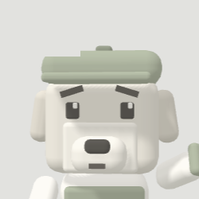
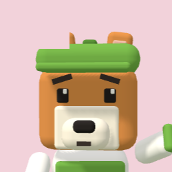
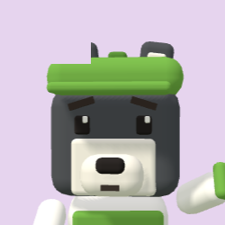

×
СБОРКА №2
1:40
3.1.1
Хлеб
×3
2.1.3
Сок
×1
2.2.3
Макароны
×3
2.4.2
Чипсы
×2
Память
8 / 5
Нюх
4 / 6
Сила
3 / 6
Лапы
4 / 6
Дружба
5 / 2
Почему Память 5?
4 товара — 4 адреса нужно держать в голове.
Отправить Коржика
+200 ₽

ЛАКИ
Занят · 0:15

КОРЖИК
0:20

БУРАН
0:44